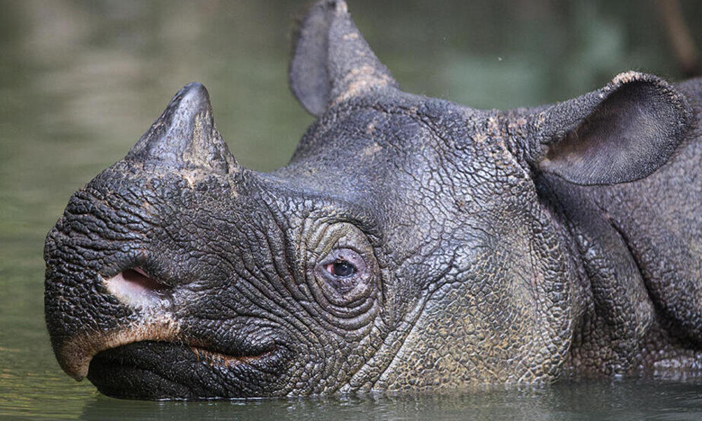
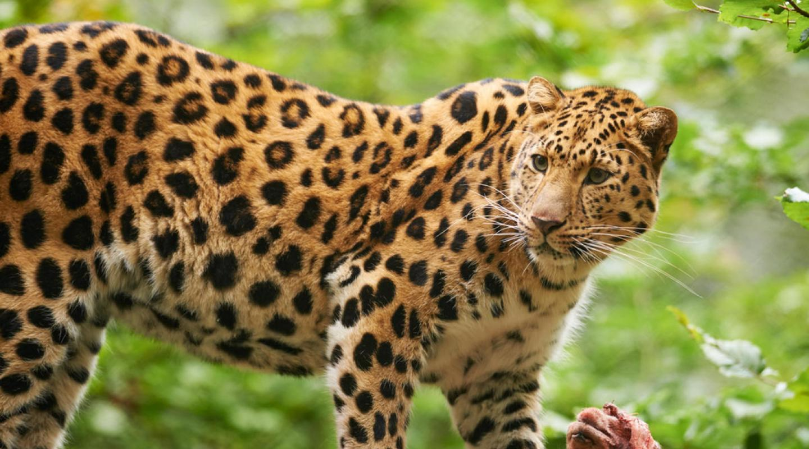
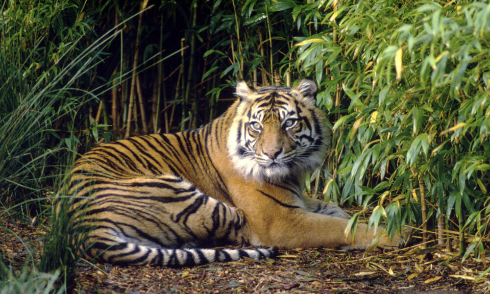
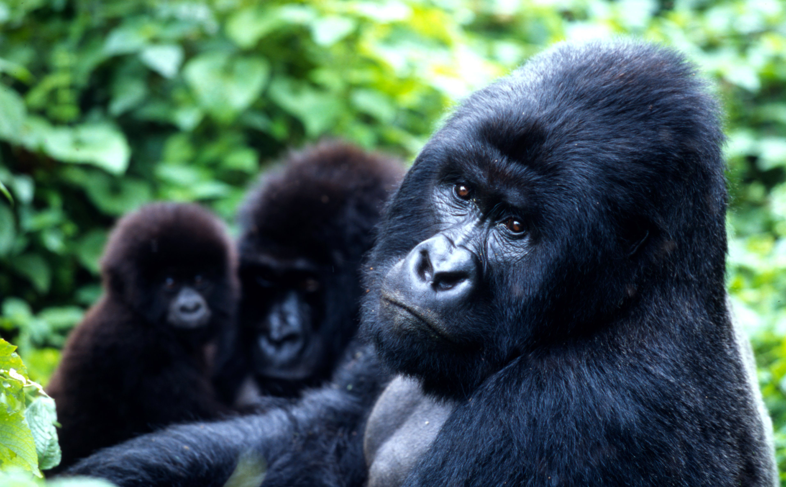
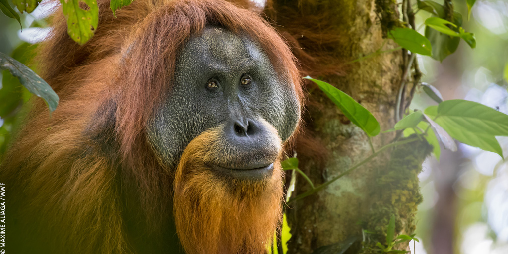
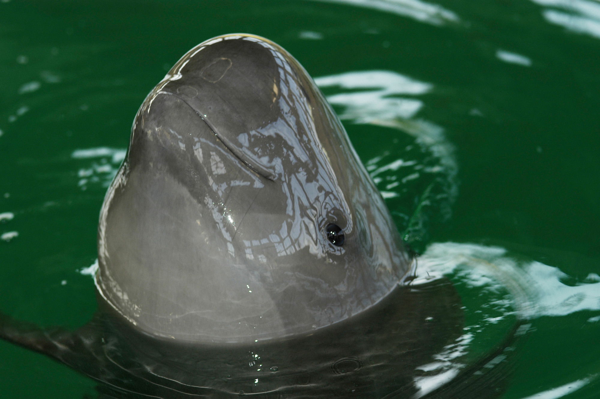
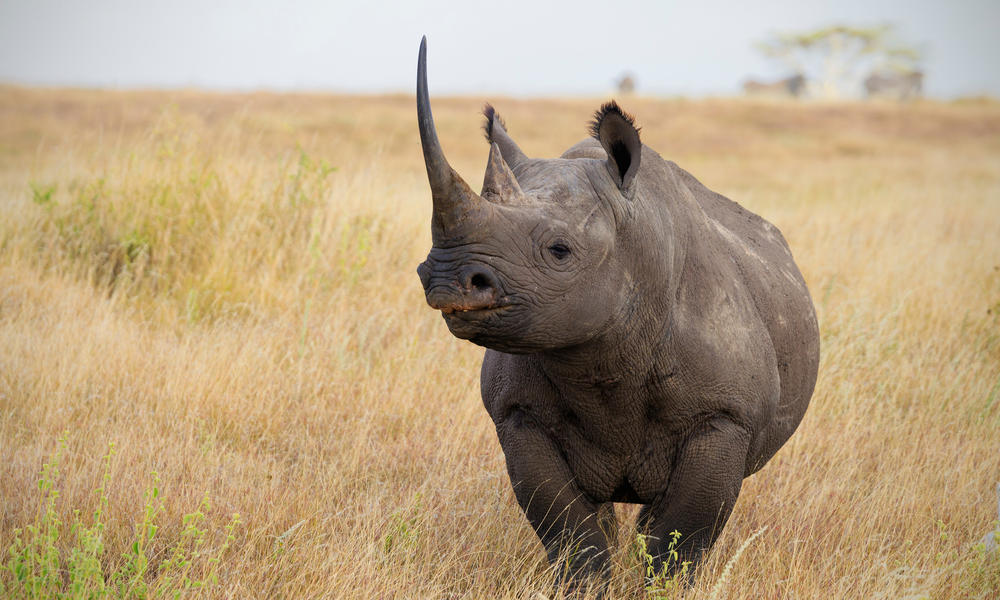

| Rank | Name | Status | Location | Causes | Current Population (Estimate) |
|---|---|---|---|---|---|
| 1 | Javan Rhino  |
Critically Endangered | Java, Indonesia |
|
75 |
| 2 | Amur Leopard  |
Critically Endangered | East Russia and Northeast China |
|
100 |
| 3 | Sunda Island Tiger  |
Critically Endangered | Sumatra, Indonesia |
|
600 |
| 4 | Mountain Gorilla  |
Endangered | Democratic Republic of Congo, Rwanda, Uganda, and Bwindi Impenetrable National Park |
1,000 |
|
| 5 | Tapanuli Orangutan  |
Critically Endangered | Sumatra, Indonesia |
|
Under 800 |
| 6 | Yangtze Finless Porpoise  |
Critically Endangered | Yangtze River, China |
|
1,000 |
| 7 | Black Rhinos  |
Critically Endangered | Kenya, Namibia, South Africa, and Zimbabwe |
|
5,630 |
Sources: